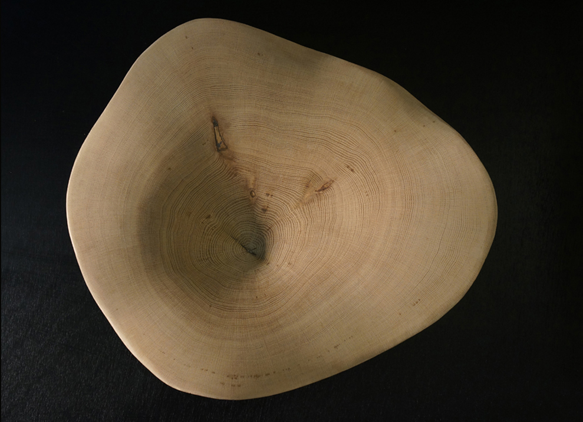
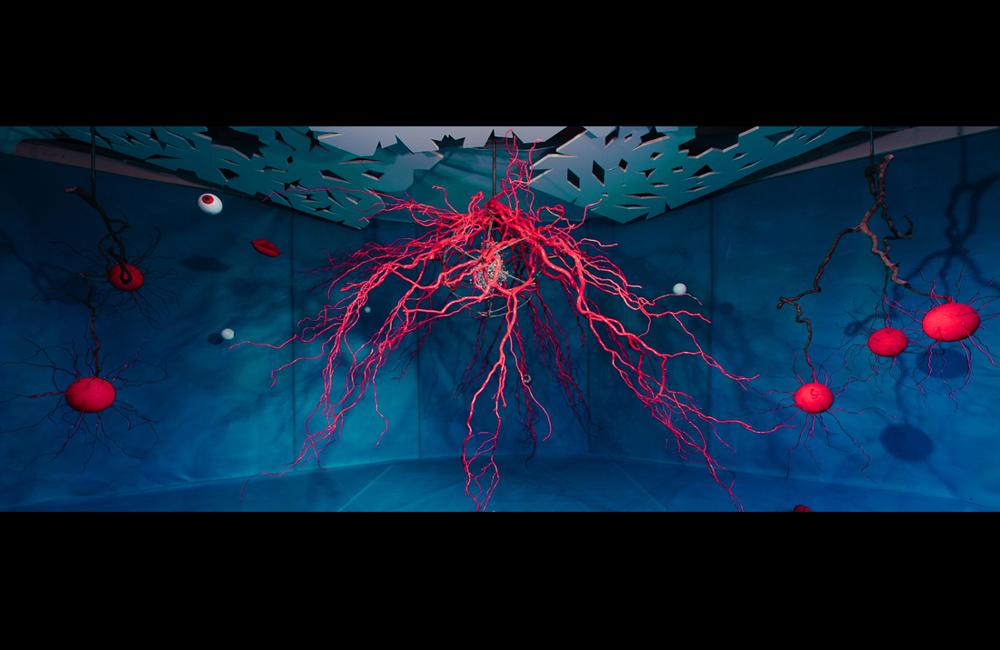

Artist & Independent Curator
The Work
Employing a variety of disciplines, Kate Doyle explores the beauty and impact of natural systems — questioning human relationships with nature, with preservation, and with the prospects of climate change. An established working artist for 35 years, well known for her painting and painting-photo fusions, Kate has exhibited in New York, across the USA, and in Europe, and is collected internationally by museums, corporate collections, and private collectors.
Her practice now manifests in two major bodies of work: intimately scaled sculpture and mixed-media works, and larger walk-through sculptural installations. She considers herself to be collaborating with nature.
"Art might be partially defined as an expression of that moment of tension
when human intervention in, or collaboration with, nature is recognized."
— Lucy Lippard, Overlay, 1983

Gallery
Paintings, painting-photo fusions, and sculpture across her ongoing series.
Ouroboros Projects

Ouroboros began in 2016, when Kate became directly involved with climate-change science. She conceived the idea to make highly impactful art from satellite data — an immersive, intense aesthetic experience based directly on nature. She is artist-in-residence at the NASA Goddard Institute for Space Studies (GISS), collaborating with GISS and NASA on new projects.
Ouroboros takes many forms: a multiple-chamber installation full of video and sound; single-space exhibitions with educational programs; workshops for audiences young and old; and a TED-talk-style presentation with a panel of scientists and artists. Visitors are asked to engage with a question and leave a message — or commit to an action.
Ouroboros inquiriesAbout & Process
Kate became involved with sculpture and installation to focus more directly on nature, preservation, and a human place within the earth's robust yet delicately balanced systems.
Her wooden sculptures begin as thin-cut end-grain slices from an 1860's oak that fell in a storm and was destined for firewood. The slices engage with conditions in her studio; nature creates the forms; Kate then adds finishes or lacquers. Larger works and installations are made of cast-off or recycled materials — felt made locally from recycled soda bottles, fallen trees and branches, musical instruments fashioned from found things.
She asks visitors to engage with a question and leave a message or commit to an action. The messages left behind are often deeply personal, sometimes shocking. She hopes to contribute to dynamic reflection and change.
Curriculum Vitae
Born San Francisco, CA. University of Louvain, Belgium; American University, Washington DC — Art & Art History, BFA magna cum laude; Studio Simi, Florence, Italy.
Full CVContact